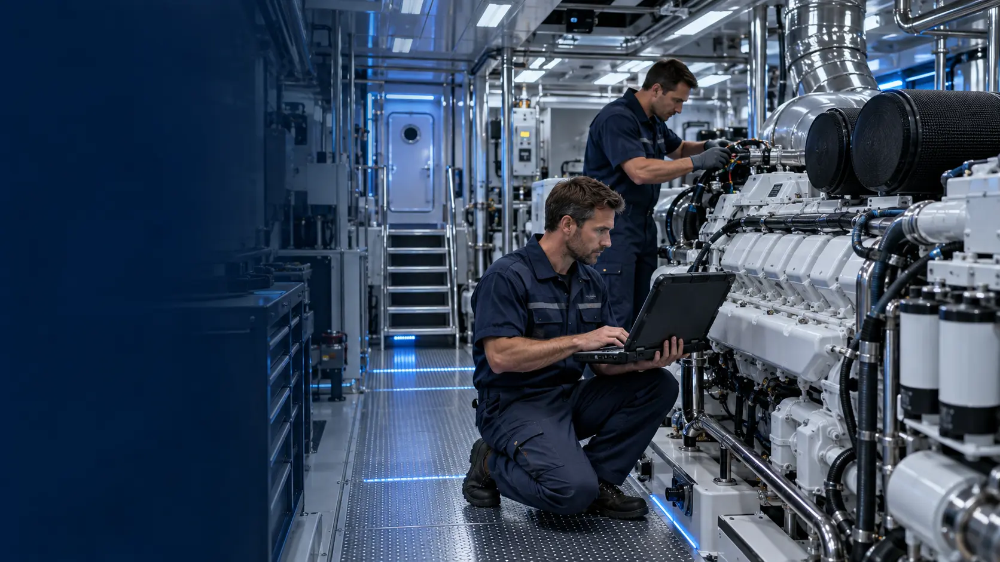

Dijital teşhis · Marmara
MTU Series 2000 özel servis
Series 2000 motorlarda kayıt, ölçüm ve fiziksel kontrolü aynı süreçte ele alıyor; bakım veya onarım kararını doğrulanabilir bulgularla planlıyoruz.
Veriye dayalı motor kontrolü.
Tekne konfigürasyonu, motor seri numarası, çalışma saati ve gözlenen sorun birlikte kaydedilir. Servis kapsamı, erişilebilir teknik verilere ve saha ölçümlerine göre belirlenir.
Bilgilendirme: DM MARİN, MTU yetkili servisi değildir; bağımsız özel servis olarak hizmet verir.
Teknik değerlendirme akışı
Kayıt
Seri numarası ve çalışma saati.
Teşhis
Dijital veri ve fiziksel ölçüm.
Onay
İşlem kapsamı ve parça planı.
Kontrol
Çalışma testi ve teslim bilgisi.